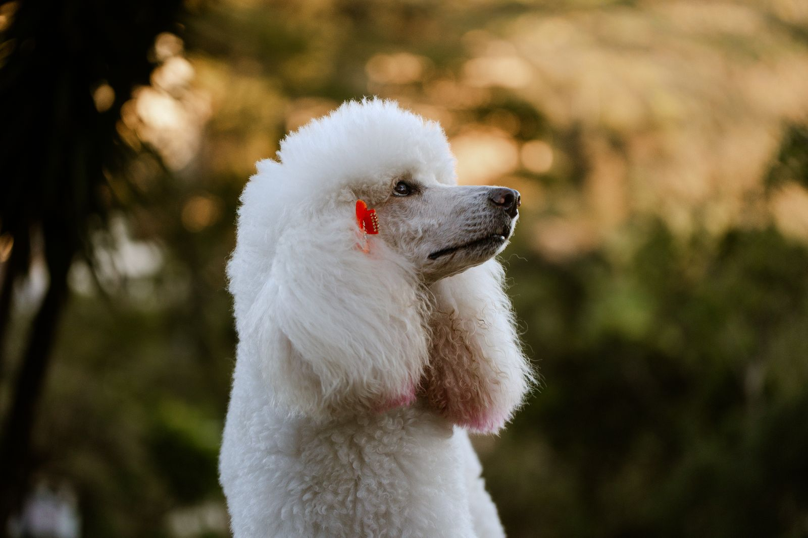
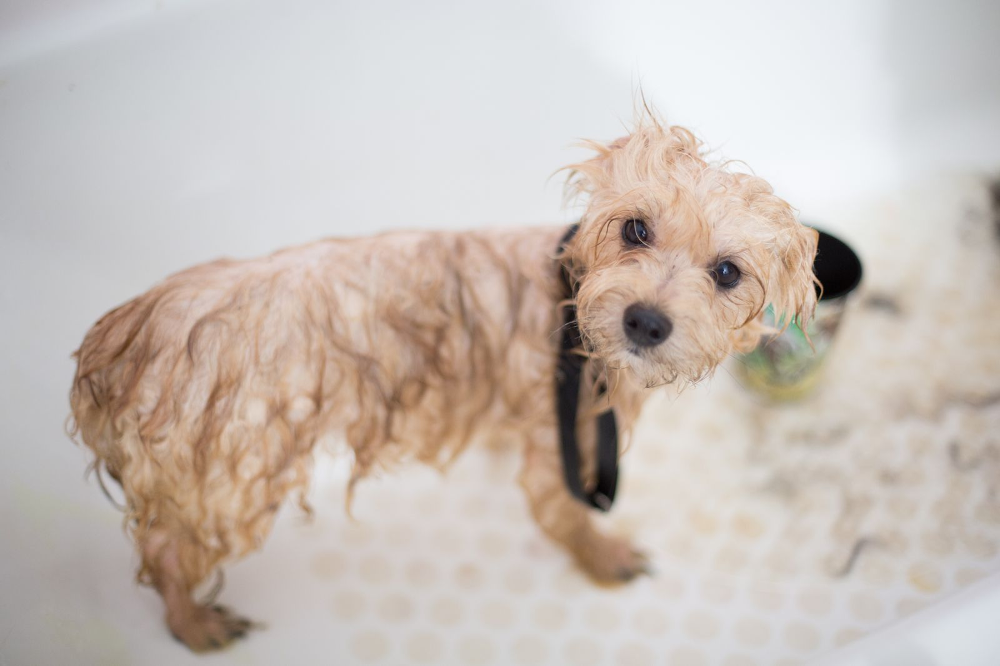
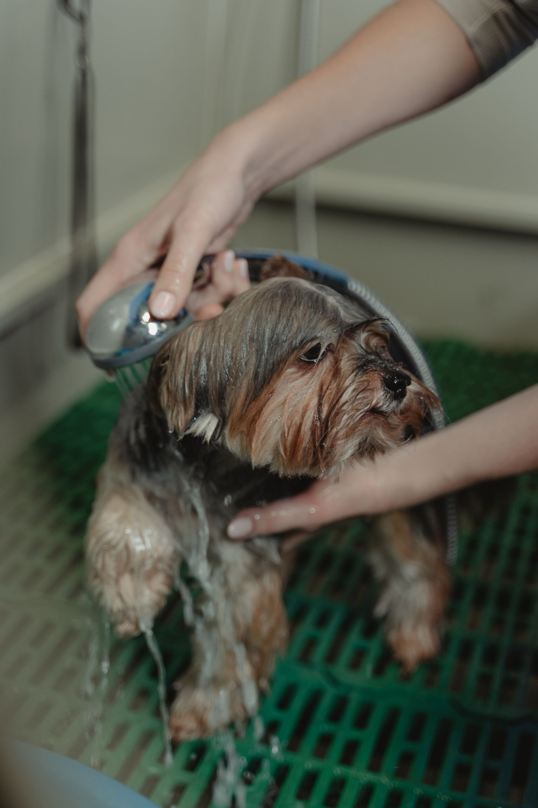

Hundefriseur in Saarbrücken-Malstatt
Mit Geduld und Herz.
Baden, Scheren, Trimmen und Krallenpflege bei Claudia Noll – Termine nach Vereinbarung.
- 4,6 von 550 Bewertungen
- InhabergeführtClaudia Noll persönlich
- Nach VereinbarungTelefon oder E-Mail
- MalstattFriedrichsthaler Str. 2
Leistungen
Alles, was Ihr Hund braucht – vom Bad bis zur Kralle.
Jeder Hund ist anders. Deshalb gibt es kein Programm von der Stange, sondern Pflege, die zu Fell, Rasse und Charakter passt.
-
Fell & Schnitt
Gründlich gebadet mit Shampoo passend zum Fell, in Ruhe geföhnt, dann geschnitten mit der Schere oder geschoren mit der Maschine. Rauhaarige Rassen werden klassisch getrimmt – die Fellstruktur bleibt erhalten.
-
Pflege & Gesundheit
Verfilzungen lösen und lose Unterwolle entfernen, damit die Haut wieder atmet. Krallen auf die richtige Länge kürzen, Fell zwischen den Ballen schneiden, Ohren reinigen und Haare im Gehörgang entfernen.
-
Rassetypische Schnitte
Jede Rasse hat ihre Frisur: vom pflegeleichten Alltagsschnitt bis zur klassischen Form, bei der Kopf, Pfoten und Rute sauber herausgearbeitet werden. Welcher Schnitt zu Ihrem Hund passt, besprechen Sie vor Ort.
Was kostet ein Termin?
Der Preis hängt von drei Dingen ab: Größe Ihres Hundes, Zustand des Fells (verfilzt oder regelmäßig gepflegt) und der gewünschten Leistung – vom reinen Bad bis zum kompletten Schnitt. Alle Leistungen gibt es einzeln oder kombiniert. Nennen Sie am Telefon kurz Rasse, Gewicht und Wunsch, dann erfahren Sie den Preis für Ihren Hund.

Erster Besuch
Gut vorbereitet zum ersten Termin.
Ob Welpe, Senior oder Hund mit Vorgeschichte: Je mehr Claudia Noll vorab über Ihren Hund weiß, desto besser lässt sich der Termin planen. Diese Angaben helfen am Telefon oder in der E-Mail:
- Rasse, Alter und ungefähres Gewicht
- Zustand des Fells – regelmäßig gepflegt oder verfilzt
- Was Ihr Hund mag und was ihm schwerfällt, etwa Föhn, Pfoten oder Ohren
- Gewünschte Leistung – oder einfach die Frage, was sinnvoll ist
So läuft's ab
Vier Schritte zum frisch gepflegten Hund.
-
Anrufen & Termin finden
Kurz anrufen, Rasse und Wunsch nennen – gemeinsam finden wir einen passenden Termin.
-
Ankommen & besprechen
Vor Ort besprechen Sie mit Claudia Noll, welcher Schnitt oder welche Pflege für Fell und Haut Ihres Hundes sinnvoll ist.
-
Baden, Föhnen, Pflegen
Vom Bad über Schnitt oder Trimmen bis zu Krallen, Pfoten und Ohren – einzeln oder alles in einem Besuch.
-
Abholen & strahlen
Sie holen Ihren Hund frisch gepflegt ab – und vereinbaren bei Bedarf gleich den nächsten Termin.
Termin anfragen
Termine gibt es nach Vereinbarung – am schnellsten telefonisch. Ist das Telefon gerade nicht besetzt, weil ein Hund auf dem Tisch steht, hilft eine kurze E-Mail mit Rasse, Gewicht, Wunschzeit und Ihrer Rückrufnummer.

Kundenstimmen
Das sagen Hundebesitzer bei Google.
Auszüge aus öffentlichen Google-Rezensionen zu Claudias Hundesalon (Stand: Oktober 2026).
-
★★★★★
„Frau Noll ist sehr kompetent hat viel Geduld und geht auf die Bedürfnisse des Hundes ein … wir sind sehr zufrieden und gehen gerne zu ihr.“
-
★★★★★
„Dieser Hundesalon ist wunderbar und die Claudia sehr liebe Frau. Unser Zorro ist immer nervös wenn er geschoren wird. Aber sie handhabt ihn super.“
-
★★★★★
„Sehr nette Leute und gehen sehr auf die Tiere ein!!“
Claudia Noll
Inhaberin · Hundefriseurin
- Salon
- Friedrichsthaler Straße 2, Saarbrücken-Malstatt
- Schwerpunkte
- Schneiden, Scheren, Trimmen, Baden, Krallen- und Ohrenpflege
- Termine
- Nach Vereinbarung – 0681 9658968
Über Claudia
Ein Salon, eine Ansprechpartnerin – und viel Ruhe.
Claudias Hundesalon ist ein inhabergeführter Hundesalon in Saarbrücken-Malstatt. Claudia Noll kümmert sich persönlich um jeden Hund, der zu ihr kommt – vom ersten Anruf bis zum letzten Schnitt. Wer hier einen Termin hat, kennt sein Gegenüber – und das loben Kundinnen und Kunden in ihren Bewertungen immer wieder: Geduld, Freundlichkeit und ein faires Preis-Leistungs-Verhältnis.
Das Spektrum reicht vom Bad mit Föhnen über Schneiden, Scheren und Trimmen bis zu Entfilzen, Entwollen und der Pflege von Krallen, Pfoten und Ohren. Rassetypische Schnitte gehören genauso dazu wie das Trimmen rauhaariger Rassen.
- InhabergeführtClaudia Noll
- 4,6 ★50 Bewertungen bei Google
- 5,0 ★3 Bewertungen bei golocal
Bewertungsstand: Oktober 2026
Kontakt
Wir freuen uns auf Sie und Ihren Hund.
Adresse
Claudias HundesalonClaudia Noll
Friedrichsthaler Straße 2
66113 Saarbrücken
Stadtteil Malstatt
Route planenTermine
Termine nach Vereinbarung. Rufen Sie an – wir finden gemeinsam eine Zeit, die zu Ihnen und Ihrem Hund passt. Nicht erreicht? Dann einfach später noch einmal anrufen oder kurz per E-Mail mit Rückrufnummer melden.
Gut zu wissen
- Schneiden, Scheren und Trimmen – passend zur Rasse
- Geduld und Freundlichkeit – das loben Kunden bei Google
- Alle Leistungen einzeln oder kombiniert